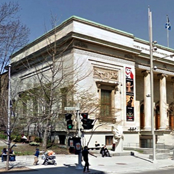
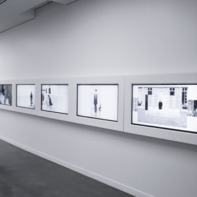
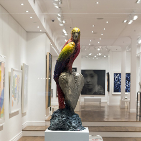
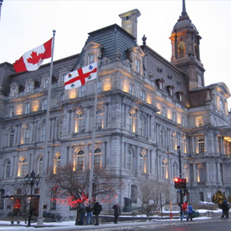
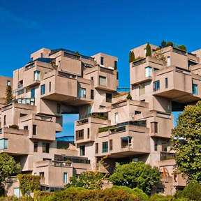
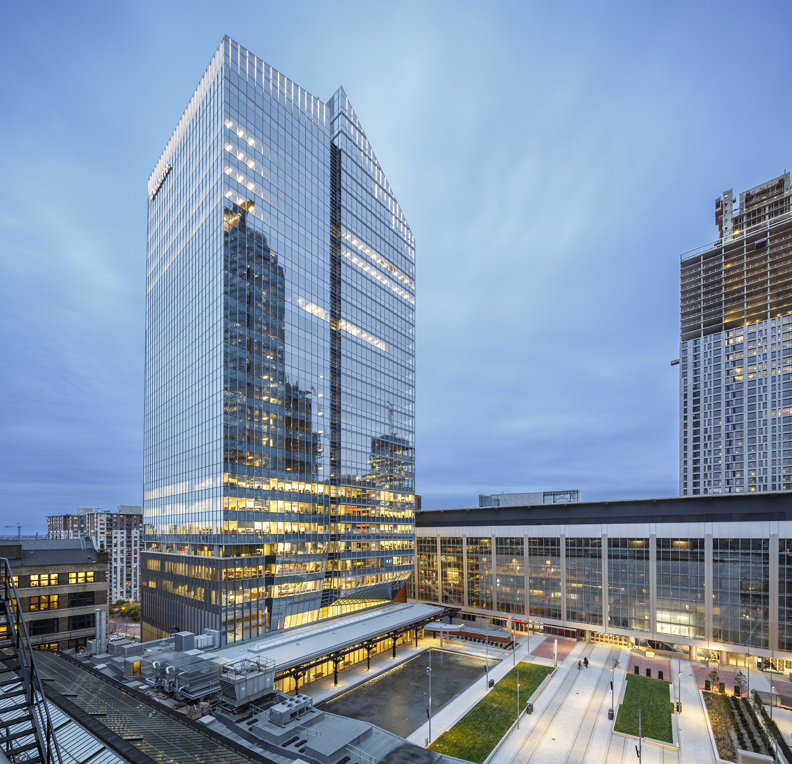

|  |
Museum of Fine Arts
Founded in 1860 as the Art Association of Montreal by a group of Montreal art collectors and patrons, the Montreal Museum of Fine Arts (MMFA) was one of the first museums in North America to build up an encyclopedic collection worthy of the name. It now numbers over 41,000 works from Antiquity to today, making it unique in Canada. It comprises paintings, sculptures, graphic arts, photographs and decorative art objects displayed in four pavilions: the Jean-Noel Desmarais Pavilion (international art), the Michal and Renata Hornstein Pavilion (world cultures), the Liliane and David M. Stewart Pavilion (decorative arts and design) and the Claire and Marc Bourgie Pavilion (Quebec and Canadian art). The latter, which was inaugurated in September 2011, includes a 444-seat concert hall - Bourgie Hall - featuring an important group of Tiffany stained glass windows.
|
|  |
Phi center
Dedicated to art in all its forms, Phi is a multidisciplinary arts and culture organization that cultivates all aspects of creation, development, production and dissemination. Phi is at the intersection of art, film, music, design and technology. Through eclectic programming and a strong emphasis on content creation, Phi fosters unexpected encounters between artists and audiences. Headquartered at the Phi Centre in Montreal Canada, Phi was created by Director and Founder Phoebe Greenberg.
|
|  |
Galerie de Bellefeuille
An all-Canadian gallery turned International, Helen and Jacques de Bellefeuille strive to showcase emerging Canadian talent alongside higher-tier artists from around the globe. It was founded in 1980 and has hosted many important events since. Artists like Damien Hirst and Sophie Ryder have seen the walls of de Bellefeuille. It’s become such an important space in the city, that in 2014 they took over a location across the street from the original gallery, dedicating it to 6,500 square feet of contemporary art.
|
|  |
City Hall
The five-story Montreal City Hall (French: Hôtel de Ville de Montréal) is the seat of local government in Montreal, Quebec, Canada. The original city hall was the work of architects Henri-Maurice Perrault (fr) and Alexander Cowper Hutchison (fr), built between 1872 and 1878 in the Second Empire style.As one of the best examples of the Second Empire style in Canada, and the first city hall to have been constructed in the country solely for municipal administration, it was designated a National Historic Site in Canada in 1984.
|
|  |
Habitat 67
Habitat 67, or simply Habitat, is a model community and housing complex in Montreal, Quebec, Canada, designed by Israeli/Canadian architect Moshe Safdie. It was originally conceived as his master's thesis in architecture at McGill University and then built as a pavilion for Expo 67, the World's Fair held from April to October 1967. It is located at 2600 Avenue Pierre-Dupuy on the Marc-Drouin Quay next to the Saint Lawrence River. Habitat 67 is widely considered an architectural landmark and one of the most recognizable and spectacular buildings in both Montreal and Canada.
|
|  |
The Deloitte Tower
The Deloitte Tower (French: Tour Deloitte) is a 26-storey office building in Montreal, Quebec, Canada, located between Windsor Station and the Bell Centre. It is the city's first privately owned and financed commercial office tower to be built in more than 20 years. Completed in May 2015, the building features 495,000 square feet (46,000 m2) of office space, and 20,000 square feet (1,900 m2) of retail space.[2] It is named for professional services firm Deloitte, which occupies 160,000 square feet (15,000 m2) of office space in the building.[2] It also houses the headquarters of Rio Tinto Alcan, which relocated from the Maison Alcan
|